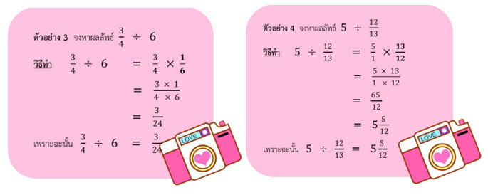

ความรู้เกี่ยวกับทศนิยมได้ถูกนำมาใช้ในวิชาคณิตศาสตร์ตั้งแต่สมัยศตวรรษที่ 15 โดยนักคณิตสาสตร์ 3 ท่านคือ Francois Vieta, Simon Steven และ Neper John Napier (ค.ศ. 1550-1617) โดยได้นำทศนิยมมาใช้อย่างกว้างขวางเกี่ยวกับการวัดความยาว การคิดคำนวณสำหรับการสร้างบ้านเรือน การคิดราคาสินค้า และการคิดภาษี เป็นต้น เพราะการใช้หน่วยที่เป็นจำนวนเต็มนั้นไม่เพียงพอ การใช้หน่วยเล็กๆ เป็นสิ่งจำเป็น ทำให้ได้ความละเอียดในการวัดและการคำนวณมากขึ้นดังนั้นจึงมีการนำทศนิยมมาใช้ ดังจะเห็นได้จากระบบเมตริก และในปัจจุบันนักเรียนได้เริ่มเรียนเกี่ยวกับทศนิยมตั้งแต่ชั้นประถมศึกษาปีที่ 3
นักเรียน มักพบเห็นเกี่ยวกับการใช้ตัวเลขที่อยู่ในรูปทศนิยมอยู่เสมอในชีวิตประจำวัน
ตัวอย่าง
น้ำมันเบนซินธรรมดาราคาลิตรละ 29 บาท 59 สตางค์ แทนด้วย 29.59 บาท
ปลาทับทิมตัวหนึ่งหนัก 1 กิโลกรัม 4 ขีด แทนด้วย 1.4 กิดลกรัม
แบงค์หนัก 48 กิโลกรัม 40 กรัม แทนด้วย 48.40 กิโลกรัม
ตัวอย่าง
1) กระดานดำกว้าง 1 เมตร 5 เซนติเมตร (เมตร)
ตอบ 1.05 เมตร
2) ทางเดินรอบโรงเรียนยาวประมาร 3 กิโลเมตร 200 เมตร(กิโลเมตร)
ตอบ 3.02 กิโลเมตร
3) บ้านครูดีอยู่ห่างจากบ้านฉันประมาณ 300 เมตร (กิโลเมตร)
ตอบ 0.03 กิโลเมตร
จากจำนวนที่อยู่ในรูปทศนิยม ทั้ง 5 ข้อข้างต้น นักเรียนจะพบว่าจำนวนที่อยู่ในรูปทศนิยมประกอบด้วย 2 ส่วน คือ ส่วนที่เป็นจำนวนเต็ม และ ส่วนที่เป็นทศนิยม ซึ่งมีจุด (.) คั่นระหว่างสองส่วนนั้น
การเขียนจำนวนในรูปทศนิยมให้อยู่ในรูปกระจายและค่าประจำหลัก ของเลขโดดในหลักต่างๆ ของทศนิยม เป็นดังนี้
การบวกทศนิยมที่เป็นบวกว่ามีเกณฑ์เช่นเดียวกับการบวก จำนวนนับคือ จะต้องจัดเลขโดดที่อยู่ในหลักเดียวกันหรือตำแหน่งเดียวกันให้ตรงกันเสมอ แล้วจังบวกกัน หรืออาจกล่าวได้ว่าให้จัดทศนิยมที่เป็นตัวตั้งและทศนิยมที่เป็นตัวบวกให้จุดทศนิยมตรงกัน ถ้าเป็นทศนิยมที่มีตำแหน่งทศนิยมไม่ท่ากัน อาจใส่เลข 0 หลัวตัวเลขตัวสุดท้ายของทศนิยมนั้นๆ เพื่อให้มีตำแหน่งทศนิยมเท่ากันก็ได้ ดังตัวอย่างต่อไปนี้
สรุป การบวกทศนิยมที่เป็นบวกด้วยทศนิยมที่เป็นบวกให้นำค่าสัมบูรณ์ของ แต่ละจำนวนมาบวกกัน
สรุป การบวกทศนิยมที่เป็นลบด้วยทศนิยมที่เป็นลบให้นำค่าสัมบูรณ์ ของแต่ละจำนวนมาบวกกันแล้วตอบเป็นจำนวนลบ
การลบทศนิยม
นักเรียนสังเกตเห็นไหมว่า ทศนิยมที่เป็นบวกและทศนิยมที่เป็นลบที่มีค่าสัมบูรณ์เท่ากันจะอยู่คนละข้างกับ 0 และอยู่ห่างจาก 0 เป็นระยะทางเท่ากัน เช่น -0.5 และ0.5
การหาผลลบของทศนิยมใดๆ ว่าใช้ข้อตกลงเดียวกัน การหาผลลบของจำนวนเต็ม ดังนี้
ตัวตั้ง – ตัวลบ = ตัวตั้ง + จำนวนตรงข้ามของตัวลบ
เมื่อ a และ b แทนทศนิยมใดๆ
a – b = a + จำนวนตรงข้ามของ b
หรือ a – b = a + (-b)
เช่น 3.76 – 2.55 = 3.76 + (-2.55)
(-7.92) – 4.07 = (-7.92) + (-4.07)
(-12.43) – (-10.71) = (-12.43) + 10.71
88.75 – (-46.39) = 88.75 + 46.39
การคูณทศนิยม
การคูณทศนิยมที่เป็นบวกมีวิธีการเช่นเดียวกับการคูณจำนวนเต็มบวกแล้วใส่จุดทศนิยมให้ถูกที่ โดยนับจำนวนตำแหน่งทศนิยมของตัวตั้ง และตัวคูณรวมกันเป็นจำนวนตำแหน่งทศนิยมของผลคูณ กล่าวคือ ถ้าตัวตั้งเป็นทศนิยมที่มี bตำแหน่ง ผลคูณจะเป็นทศนิยมที่มี a + b ตำแหน่ง เช่น
|
15 |
x |
3 |
= |
45 |
|
0.15 |
x |
0.3 |
= |
0.045 |
|
100 |
x |
5 |
= |
500 |
|
1000 |
x |
20 |
= |
20,000 |
|
1000 |
x |
0.20 |
= |
200.00 = 200 |
ตัวอย่างที่ 1 จงหาผลคูณ 3.4 x 1.7
วิธีทำ 34
x
17
218
34
558
ดังนั้น 3.4 × 1.7 = 5.58
ตอบ 5.58
|
สรุป การคูณทศนิยมที่เป็นบวกด้วยทศนิยมที่เป็นบวก จะได้คำตอบเป็นทศนิยมที่เป็นบวก และมีค่าสัมบูรณ์เท่ากับผลคูณของค่าสัมบูรณ์ของสองจำนวนนั้น
|
ตัวอย่างที่ 2 จงหาผลคูณ (-3.45) × (-0.017)
วิธีทำ 345
x
17
2415
345
5865
ดังนั้น (-3.45) x (-0.017) = 0.05865
ตอบ 0.05865
|
สรุป การคูณทศนิยมที่เป็นลบด้วยทศนิยมที่เป็นลบ จะได้คำตอบทศนิยมที่เป็นบวกและมีค่าสัมบูรณ์ ของสองจำนวนนั้น |
ตัวอย่างที่ 3 จงหาผลคูณ 30.2 x (-6.81)
วิธีทำ 302
x
681
302
2416
1812
205662
ดังนั้น 30.2 x (-6.81) = -205.662
ตอบ -205.662
|
สรุป การคูณทศนิยมที่เป็นบวกด้วยทศนิยมที่เป็นลบ หรือการคูณทศนิยมที่เป็นลบด้วยทศนิยมที่เป็นบวก จะได้คำตอบเป็นทศนิยมที่เป็นลบ และมีค่าสัมบูรณ์เท่ากับผลคูณของค่าสัมบูรณ์ของสองจำนวน
|
ตัวอย่างที่ 4 จงหาผลลัพธ์ (-12.5) x 27.85 x 8
วิธีทำ (-12.5) x 27.85 x 8
8 = [(-12.5) × 8] × 27.85
= (-100) × 27.85
= -2785
ตอบ -2785
|
เมื่อมีการคูณทศนิยมสองจำนวน เราสามารถสลับที่ระหว่าง ตัวตั้งและตัวคูณได้ โดยที่ผลลัพธ์ยังคงเดิม ดังนั้นเราสามารถคูณทศนิยมคู่แรกหรือคู่หลังก่อนก็ได้ โดยที่ผลลัพธ์สุดท้ายยังคงเท่ากัน |
การหารทศนิยม
พิจารณาตัวอย่างการหารทศนิยมต่อไปนี้
ตัวอย่างที่ 6 จงหาผลหาร 885.36 ÷ 28

|
จากตัวอย่างที่ 6 พบว่าการหารทศนิยมที่เป็นบวกด้วยจำนวนนับโดยการตั้งหาร นิยมเขียนจุดทศนิยมเฉพาะของตัวตั้งและผลหารตำแหน่งของจุดทศนิยมของผลหารจะอยู่ตรงกับตำแหน่งของจุดทศนิยมของตัวตั้งเสมอส่วนจุดทศนิยมอื่นๆ อาจไม่เขียนก็ได้ |
ตัวอย่างที่ 7 จงหาผลหาร 71.8 ÷ 25
ตัวอย่างที่ 8 จงหาผลหาร 0.7787 ÷ 1.3
ตัวอย่างที่ 9 จงหาผลหาร 0.2568 ÷ 0.004
การบวกและการลบเศษส่วน
การบวกและการลบเศษส่วน ไม่เหมือนการบวกลบในตัวเลขจำนวนเต็ม สำหรับเลขจำนวนเต็ม สามารถลบกันได้เลย แต่การบวกและการลบแบบเศษส่วน จะต้องทำให้ส่วนเท่ากันเสียก่อน จึงจะสามารถบวกลบกันได้ การบวกลบเศษส่วนของจำนวน 2 จำนวนที่มีส่วนเท่ากันให้นำเศษมาบวกกัน ตัวเลขที่เป็นส่วน คงไว้เท่าเดิม (เศษ หมายถึงตัวเลขข้างบน ส่วน หมายถึงตัวเลขข้างล่าง) ดังนั้น เอาเฉพาะตัวเลขข้างบนบวกลบกัน ตัวเลขข้างล่าง คงไว้เท่าเดิม
การบวกลบเศษส่วนแบ่งออกเป็น 2 กรณี ดังนี้
1. การบวกและการลบเศษส่วนเท่ากัน
ให้นำตัวเศามาบวกหรือลบกันตามเครื่องหมาย แล้วตัวส่วนคงเดิม
2. การบวกและการลบเศษส่วนที่มีตัวส่วนไม่เท่ากัน
ใช้วิธีทำให้ตัวส่วนเท่ากันก่อน แล้วจึงนำตัวเศษมาบวกหรือลบกัน
การคูณและการหารเศษส่วน
การคูณเศษส่วน
หลักการคูณเศษส่วน มีดังนี้
1. การคูณเศษส่วนด้วยจำนวนนับ ให้นำจำนวนนับมาคูณกับตัวเศษ โดยตัวส่วนคงเดิม หรือถ้าตัวส่วนหารจำนวนนับลงตัว ให้นำตัวส่วนหารจำนวนนับแล้วจึงคูณกับตัวเศษ
2. การคูณเศษส่วนด้วยเศษส่วน ให้นำตัวเศษคูณกับตัวเศษ และนำตัวส่วนคูณกับตัวส่วน หรือถ้ามีตัวประกอบร่วมของตัวเศษและตัวส่วน ให้นำตัวประกอบร่วมมาหารทั้งตัวเศษและตัวส่วนก่อ
3. การคูณเศษส่วนด้วยจำนวนคละ ใช้วิธีทำจำนวนคละให้เป็นเศษเกินก่อน แล้วจึงนำตัวเศษคูณกับตัวเศษ และนำตัวส่วนคูณกับตัวส่วน

การหารเศษส่วน
การหารเศษส่วน การหารจำนวนใดๆ ด้วยเศษส่วน อาจคิดได้จากการนำจำนวนนั้นมาคูณกับส่วนกลับของเศษส่วนที่เป็นตัวหาร และการหารเศษส่วนด้วยจำนวนนับอาจคิดได้จากการคูณเศษส่วนที่เป็นตัวตั้งกับส่วนกลับของจำนวนที่เป็นตัวหาร
หลักการหารเศษส่วน มีดังนี้
1. การหารเศษส่วนด้วยเศษส่วน คือ การแบ่งเศษส่วนออกเป็นส่วนเท่าๆกัน หาคำตอบได้จากการคูณจำนวนนั้นกับส่วนกลับของเศษส่วนที่เป็นตัวหาร

2. การหารเศษส่วนด้วยจำนวนเต็ม คือ การแบ่งเศษส่วนที่มีอยู่ออกเป็นส่วนเท่าๆกัน คิดได้จากการคูณเศษส่วนที่เป็นตัวตั้งกับส่วนกลับของจำนวนนับที่เป็นตัวหาร
3. การหารเศษส่วนด้วยจำนวนคละ คือ การแบ่งเศษส่วนออกเป็นส่วนเท่าๆกัน แต่ในการหาคำตอบต้องทำจำนวนคละให้เป็นเศษเกินก่อน
โอกาสของเหตุการณ์